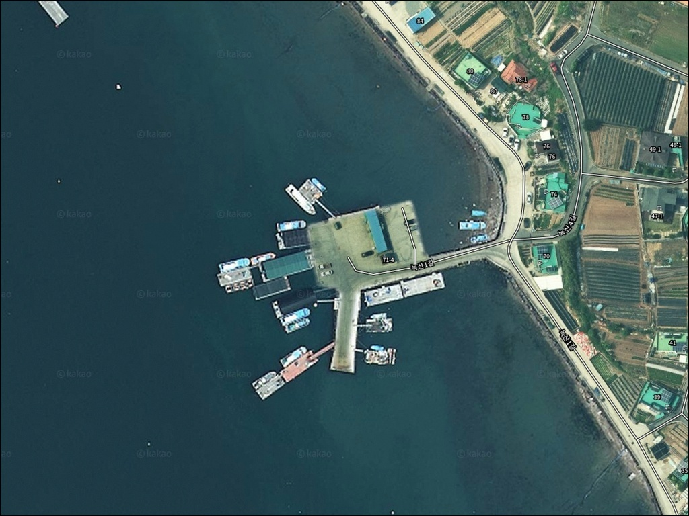
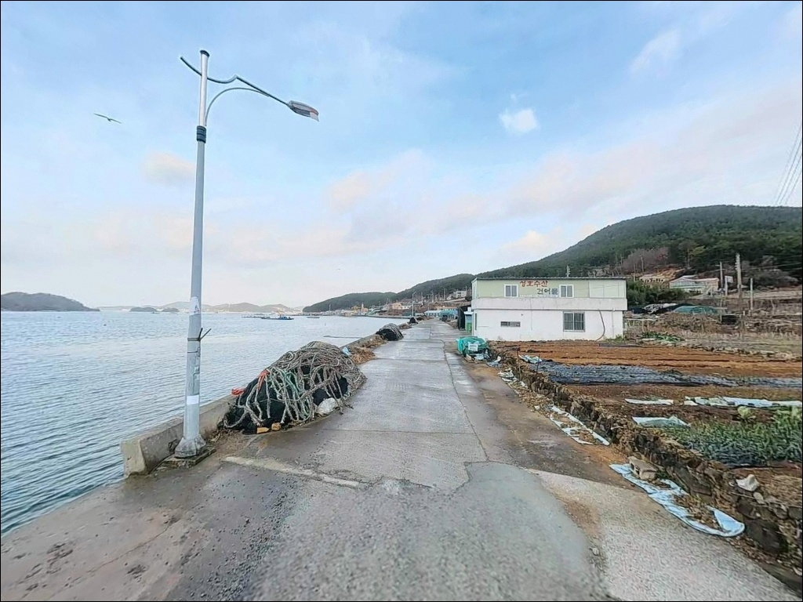
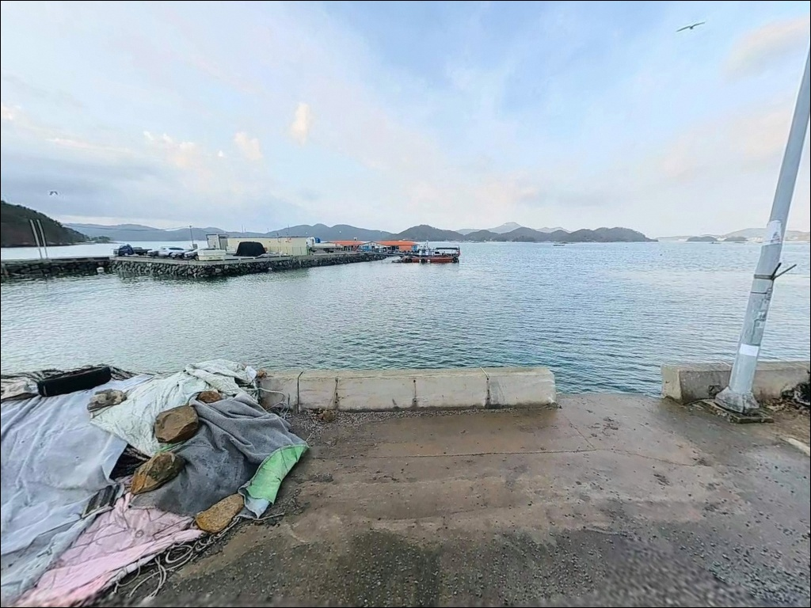
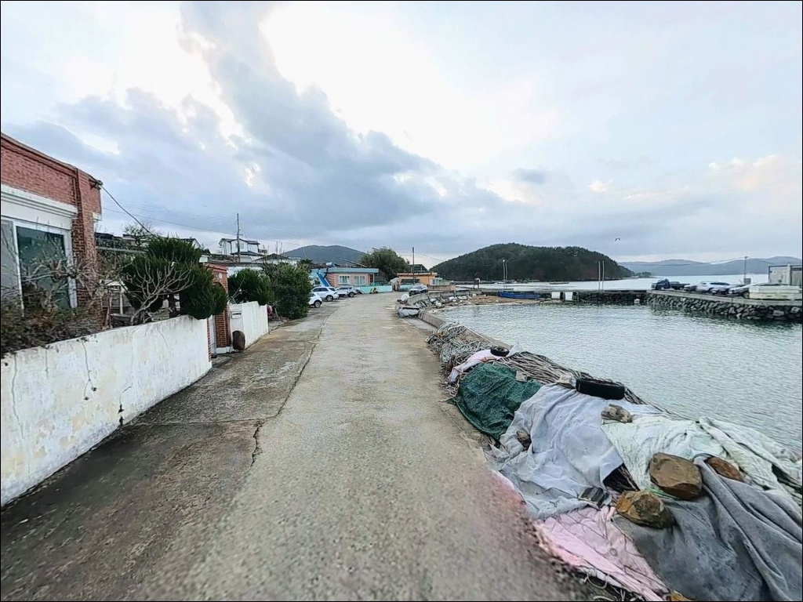
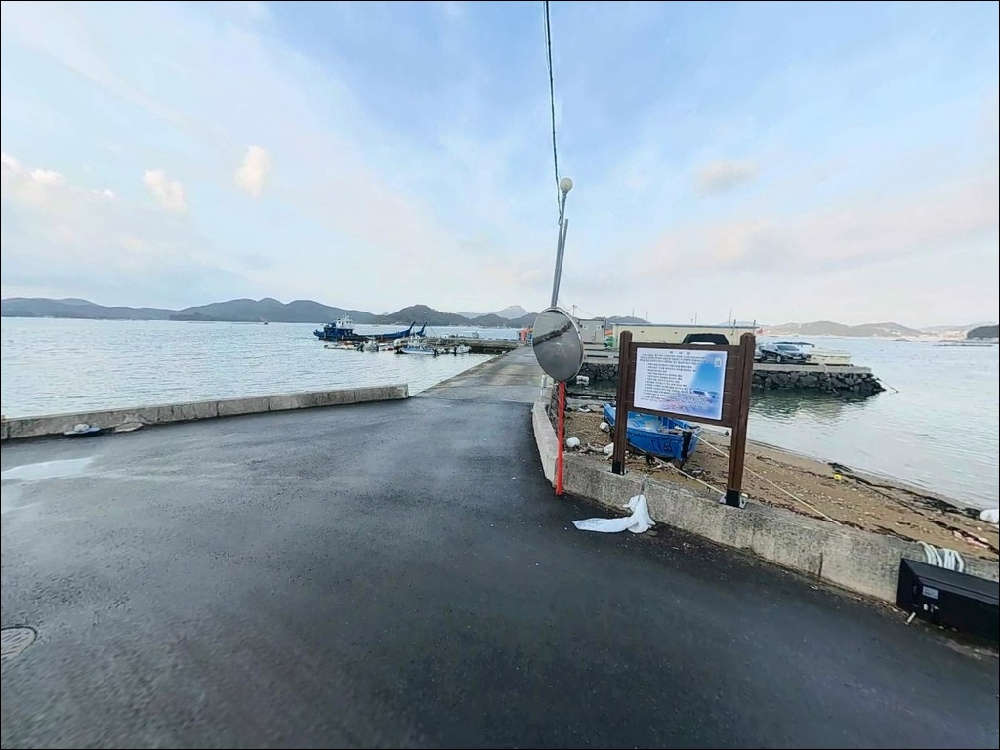
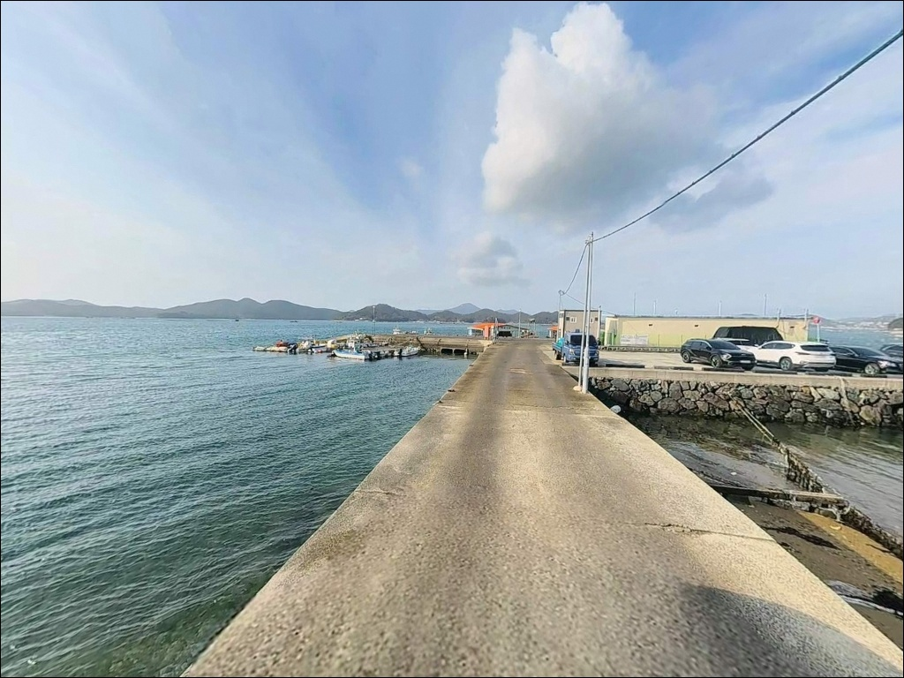
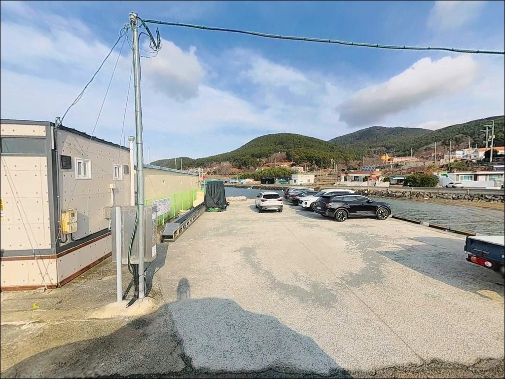
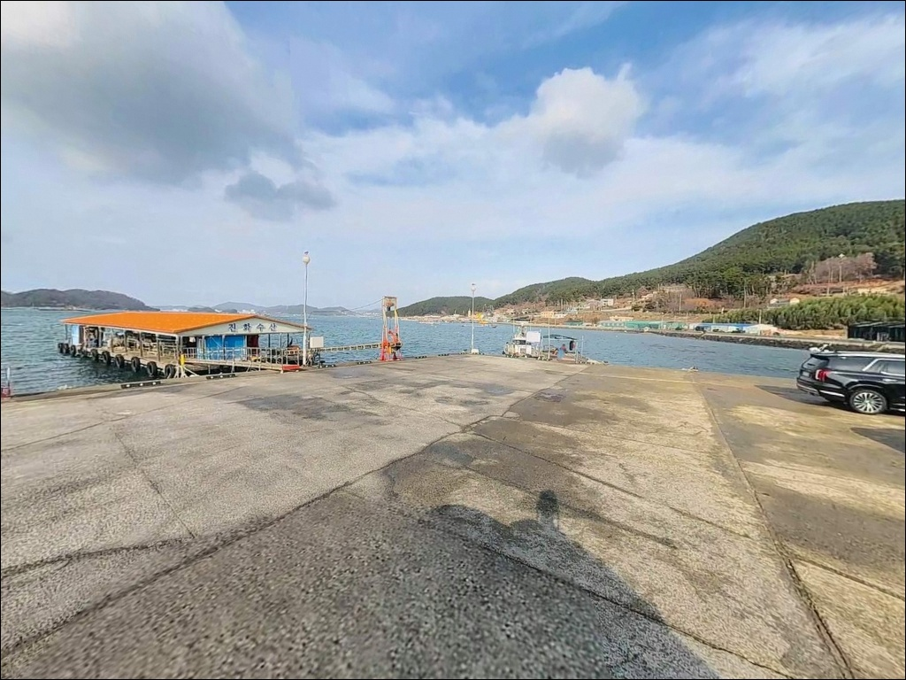
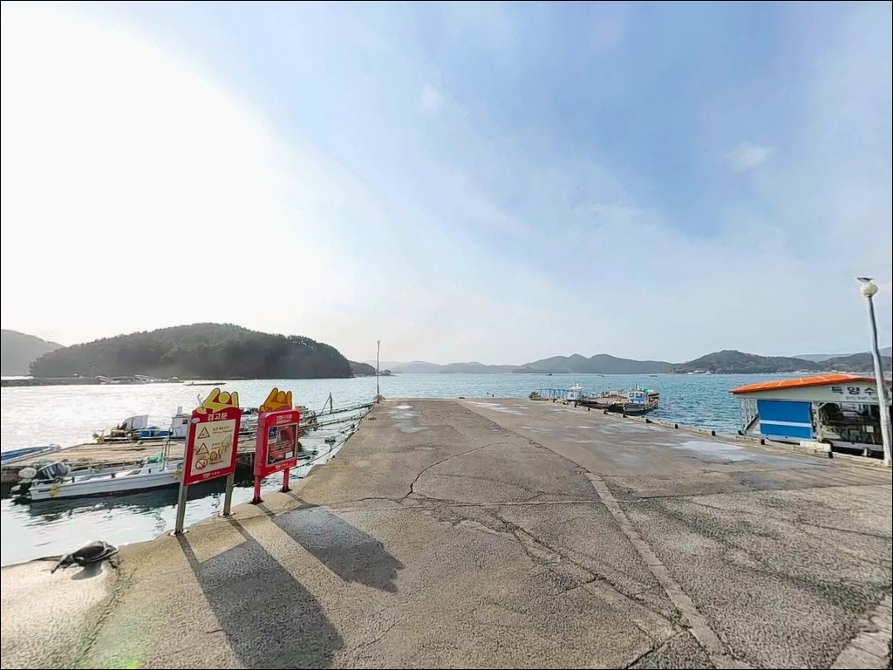

진입로 확인 없이 들어갔다 차 돌리지도 못하는 거제 술역리선착장


포인트 안내
술역리선착장
경남 거제시 둔덕면 술역리 108-56
술역리선착장을 처음 찾는 낚시인이
가장 많이 틀리는 판단은
진입로를 과소평가하는 것입니다.
물양장으로 이어지는 진입도로 일부가
사유지를 경유하는 구간이 있어
차량 접근 자체가 막히는 상황을
맞닥뜨릴 수 있습니다.
이 글은 술역리선착장의
진입 동선, 차박 여건, 낚시 여건 분석,
낚시 스타일 적합성에 집중합니다.
조황 단정이나 특정 어종 보장은
이 글의 범위에 포함되지 않습니다.

1. 진입 동선과 포인트 접근성
술역리선착장은 둔덕면 해안로를 따라
술역마을 방향으로 진입하는 구조입니다.
진입로 자체는 포장도로로 연결되어 있어
승용차 수준의 접근은 가능한 편입니다.
다만 마을 안쪽으로 들어갈수록
도로 폭이 소형 차량 위주로 좁아지는 구간이
포함되어 있습니다.
물양장 쪽으로 이어지는 진입도로는
일부 구간이 사유지를 통과하는 형태여서
초행이라면 출발 전에 인근 어촌계에
진입 가능 여부를 확인하는 것이 기본입니다.
대형 SUV나 캠핑 트레일러를 갖춘 차량이라면
회차 가능 여부도 위성지도로 미리 살펴두는 편이
실수를 줄이는 방법입니다.
주차는 선착장 인근 공터와
마을 진입로 입구 도로변 확장 구간을
활용하는 방식이 현실적입니다.
어선 접안 구역과 슬로프 구간은
어업 활동에 지장이 생기므로
자리를 피하는 것이 기본 매너입니다.

2. 차박 환경과 야간 체류 여건
술역마을은 민가 밀집도가 낮은
소규모 농어촌 마을입니다.
야간에는 차량 통행이 적고
조용한 환경이 유지되는 편이어서
차박 대기 용도로 활용하는 낚시인에게
프라이버시는 중간 수준 이상으로
확보되는 구조입니다.
선착장 방향으로는 가로등 수가 많지 않은 편이어서
야간 발판 시인성이 낮습니다.
개인 조명 장비, 특히 헤드랜턴은
차박 여부와 관계없이 필수 준비물입니다.
내만 구조 특성상 파도나 바람의
직접 영향을 크게 받지 않는 환경이라
야간 체류 자체는 비교적 안정적입니다.
차박이란 차량을 숙박 공간으로 활용하며
현장에서 하룻밤 머무는 여행 방식입니다.
술역리선착장은 주차 가능 면적이 넓지 않아
차박을 메인 목적으로 삼기보다는
낚시 후 단기 대기 용도로 활용하는 방식이
이 포인트의 규모에 맞습니다.


3. 주변 편의시설 및 인프라 현황
술역리선착장 인근에는
간이 화장실이 확인되는 위치에 있습니다.
도보 거리 내에 소규모 구멍가게가
자리한 것으로 파악되어 있어
간단한 소품은 현장 근처에서
해결이 가능한 편입니다.
반경 3km권으로 이동하면
둔덕면 소재지와 연결됩니다.
농협 하나로마트, 주유소, 식당가 등
기본 생활 인프라를 이용할 수 있어
사전 준비가 부족하다면 둔덕면 소재지를 먼저 거쳐
진입하는 동선이 효율적입니다.
응급 상황이나 대형 마트가 필요한 경우에는
거제시 고현동 방향으로
10km 내외 거리에
의료기관과 24시간 편의점이 집중되어 있습니다.
거제대교를 통해 통영 시내권으로의
접근도 15분 내외로 가능합니다.

낚시 포인트 방문 전 확인해야 할 준비사항
출발 전 가장 먼저 확인할 것은
물때입니다.
거제 내만권은 외해보다 조류 세기가 약한 편이지만,
견내량의 영향을 받는 해역이어서
물때에 따라 수면 흐름이 달라집니다.
바다타임에서 둔덕면 기준 물때를 확인하고
조류가 완만해지는 타이밍에 입장하는 것이
찌낚시와 원투낚시 모두에 유리합니다.
진입로 사전 확인도 이 포인트에서
빠트릴 수 없는 준비입니다.
물양장 진입도로가 사유지 구간을 통과하는 형태이므로
술역리 어촌계에 미리 문의하거나
위성지도로 경로를 파악해두는 것이
헛걸음을 막는 기본 조건입니다.
소형 어항은 어업인이 생활하는 공간이므로
어선 접안 구역과 작업 동선을 침범하지 않는 것이
낚시인으로서의 기본 매너입니다.
밑걸림이 있는 구간에서는 여분 채비를
넉넉히 준비하는 편이 좋고,
야간에는 구명조끼와 헤드랜턴을
반드시 갖춰야 합니다.

5. 지형 기반 낚시 여건 분석
술역리선착장이 자리한 거제 서쪽 내만은
견내량 북서쪽에 해당하는 해역입니다.
외해에 직접 노출되지 않는 완전 내항형 구조여서
파도 영향이 거의 없고
수면이 항상 잔잔한 편이라
찌낚시처럼 정밀한 채비 운용이 필요한
방식에 유리한 조건을 갖추고 있습니다.
수심은 선착장 발밑 기준
3~6m 수준으로 형성되어 있으며,
바닥은 모래와 자갈이 혼합된 저질입니다.
밑걸림이 상대적으로 적은 편이어서
초행이라도 채비 손실 부담이 크지 않습니다.
선착장 끝단 쪽으로 이동할수록
수심 변화 구간이 형성되는 구조입니다.
내만 특성상 양식장 영향권에 해당하는 해역이어서
생활형 어종과 소형 회유성 어종이
혼합된 구조로 파악됩니다.
수온 안정기에는 내만 유입 어종의
활성도가 높아지는 경향이 있습니다.
출조 전에 둔덕면 일대 조황 검색을
꼭 해보시기 바랍니다.


6. 포인트에 어울리는 낚시 스타일
이 포인트에서 지형과 가장 잘 맞는 방식은
찌낚시입니다.
내만 특유의 잔잔한 수면에서
부력이 작은 0~1호 구멍찌로
천천히 채비를 내리는 반유동 방식이
이 해역 조건에 맞습니다.
감성돔, 볼락, 망상어, 학꽁치를
기대해 볼 수 있는 낚시 방식입니다.
원투낚시도 이 포인트 구조에 잘 어울립니다.
모래·자갈 혼합 저질은
밑걸림이 적어 채비 손실 부담이 낮고,
15~30m 투척으로 바닥을 탐색하는 방식이
유효합니다.
봄~여름 시즌에는
도다리, 보리멸, 노래미류를
기대해 볼 수 있는 해역입니다.
야간에는 소형 지그헤드 채비로
선착장 발밑과 암초 경계를
천천히 탐색하는 루어 방식도 시도해볼 만합니다.
항구 가로등이 있는 구간이라면
볼락과 쥐노래미의 루어 반응이
살아나는 편입니다.
여름~가을 시즌에는
내만권에서도 갑오징어 에깅을
병행하는 방식이 가능합니다.

7. 대안 포인트와 플랜 B 동선
술역리선착장 진입이 여의치 않거나
자리 여건이 맞지 않을 때
가장 먼저 이동할 수 있는 곳은
내평마을 방파제입니다.
약 1.7km 거리로 둔덕면 해안을 따라
이동하면 닿을 수 있으며,
같은 내만권 해역 조건으로
낚시 방식도 동일하게 운용할 수 있습니다.
조금 더 이동하면
약 2.1km 거리의
어구마을 방파제가 있습니다.
둔덕면 내 유사한 해역 조건이며,
어구낚시정보화마을 유료 좌대도
인근에 운영되고 있어
확실한 자리를 원하는 경우
예약 후 이용하는 방식도 가능합니다.
감성돔 찌낚시에 더 집중하고 싶다면
약 4~5km 거리의
학산어촌계 유료낚시터가
수심이 좀 더 깊은 여건으로
알려진 대안입니다.
호곡선착장은 화도 방면 배편과 연결되는
구조로 루어 포인트 탐색에
활용해 볼 수 있는 동선입니다.

진입로만 파악해두면
술역리선착장은 조용하고 실속 있는
생활낚시 자리입니다
잔잔한 수면을 원하는 낚시인이라면
술역리선착장의 내만 조건은
잘 맞는 구조입니다.
파도와 바람 걱정 없이
찌낚시나 원투낚시를 펼치기 좋고,
야간 루어까지 함께 운용할 수 있어
복합 공략이 가능한 포인트입니다.
다만 진입로 사전 확인 없이 찾아가거나
물양장 진입도로가 막혀 있는 상황을
예상하지 못하면
현장에서 차를 돌리지도 못하는
상황이 생길 수 있습니다.
진입로 확인, 어촌계 문의, 물때 파악,
이 세 가지를 갖추고 들어간다면
둔덕면 내만에서 조용히 낚싯대를 드리우는
실속 있는 출조가 됩니다.
편의시설 없는 조용한 어촌 마을에서
잔잔한 내만을 옆에 두고 밤을 보내는
차박 낚시 여행자라면,
진입로 조건만 미리 해결해두면
낚시와 하룻밤 체류를 동시에 즐기기에
나쁘지 않은 선택지입니다.